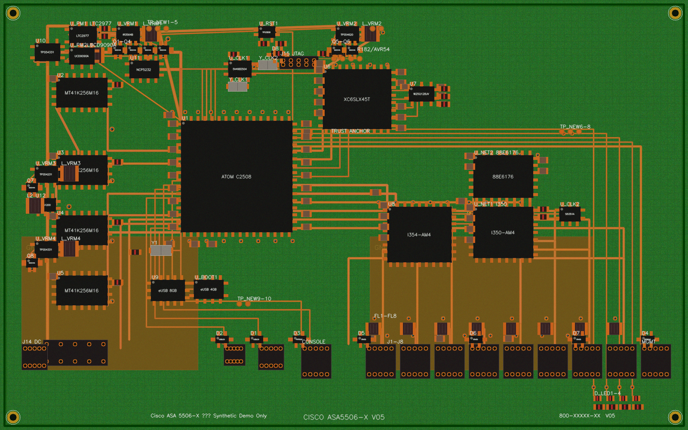
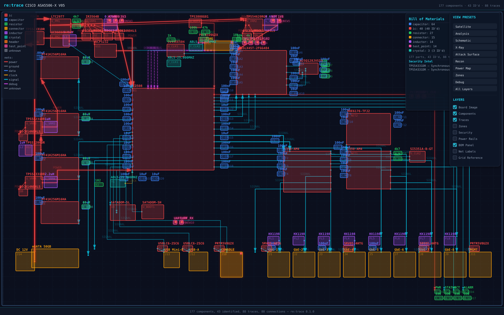
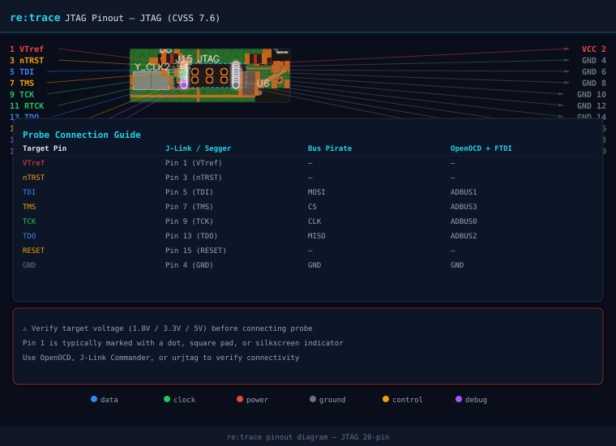
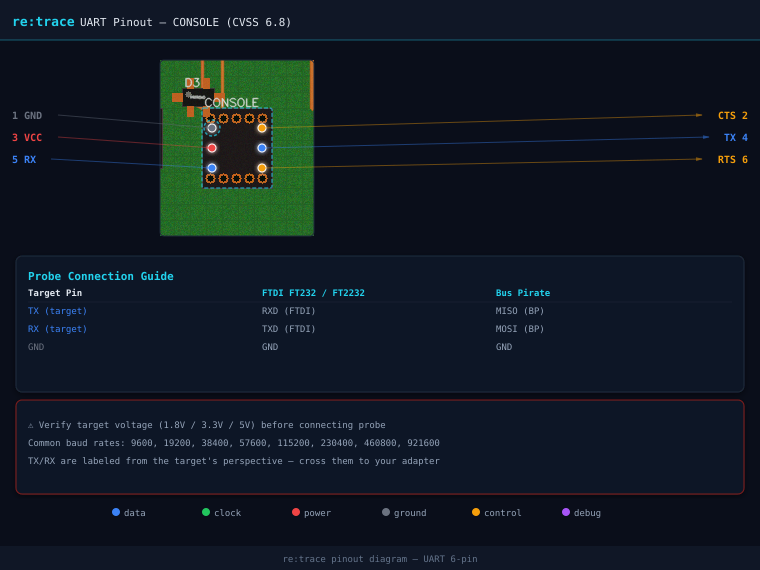
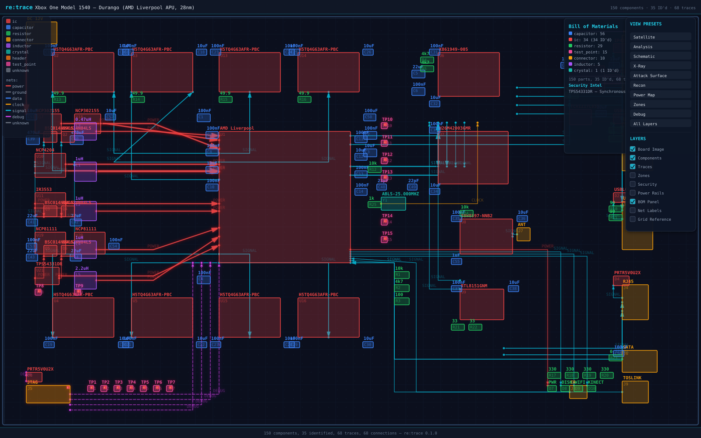
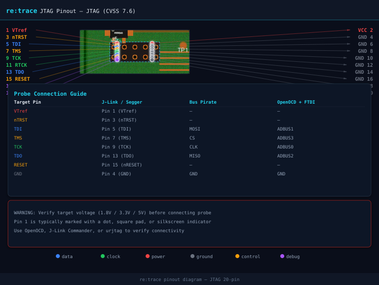

re:trace
Photo in, attack surface out. The first open-source toolkit that identifies PCB components, extracts traces, maps trust chains, and tells you where to probe.
Input: Board Photo

→
Output: Analysis Overlay

Photo in, attack surface out. The first open-source toolkit that identifies PCB components, extracts traces, maps trust chains, and tells you where to probe.

Nine stages. One command. No design files required.
One SVG. Nine layers. Ten view presets. Three rendering styles. Like switching between Satellite and Terrain on Google Maps.
Board image with translucent overlays. Default mode — like Google Maps satellite view.
Vector-only, no photo. Opaque component outlines, thick traces, bold labels. Like Google Maps roadmap.
Dimmed photo with high-contrast overlays. Everything visible at once. Hybrid satellite + roadmap.
Board photo only. Clean view for orientation.
Components + traces + BOM. Default RE view.
Vector-only with net labels and grid.
All layers with dimmed photo. Full visibility.
Security findings + attack path arrows.
Pentester first look: security + power rails.
VRMs, LDOs, rails, decoupling caps.
Functional zone overlay: CPU, memory, power.
Debug interfaces + net classification.
Everything visible. Full analysis mode.
retrace scan board.jpg --format svg — self-contained SVG with JavaScript layer controls. Open in any browser.
Two targets. Both analyzed from photos alone.









Automatically detected debug interfaces with CVSS 3.1 scoring and MITRE ATT&CK mapping.
| Severity | CVSS | Interface | Target | Component | CWE | ATT&CK |
|---|---|---|---|---|---|---|
| HIGH | 7.6 | JTAG | Cisco ASA 5506-X | J15 | CWE-1191 | T1200, T0839 |
| MEDIUM | 6.8 | UART | Cisco ASA 5506-X | J10 | CWE-1299 | T1200 |
| HIGH | 7.6 | JTAG | Xbox One 1540 | J5 | CWE-1191 | T1200, T0839 |
Self-contained HTML deliverables. Sortable BOM, datasheet hyperlinks, print-friendly. What a consultancy ships to clients.
Enterprise firewall assessment. Intel Atom C2508, Xilinx Spartan-6 Trust Anchor, Thrangrycat attack path mapped. 5 findings, 177 components, 88 traces.
Gaming console assessment. AMD Liverpool APU, 8x DDR3 banks, Southbridge X861949, SK Hynix eMMC. 1 finding, 150 components, 68 traces.
Every artifact from a single scan.
Reconstructed schematic netlist. Components mapped to KiCad footprint libraries, nets from trace extraction.
Machine-readable bill of materials. Part numbers, markings, confidence scores, datasheet URLs.
Raw pipeline output. Component bounding boxes, trace polylines, pattern matches, timing metadata.
Annotated debug header close-ups with pin labels and probe wiring guides for J-Link, Bus Pirate, FTDI, and ST-Link.
Self-contained SVG with 9 layers, 10 presets, and 3 rendering styles. Switch views like Google Maps Satellite/Terrain/Roadmap.
{kind=link}
{kind=link}
{kind=link}
{kind=link}
{kind=link}